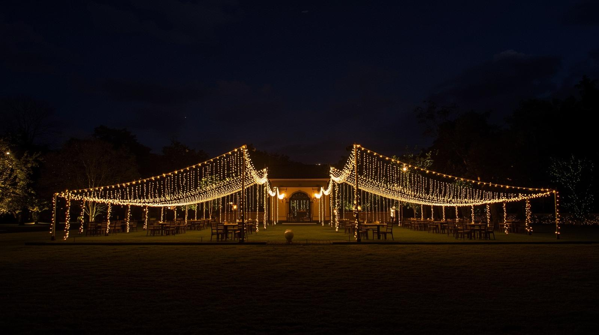
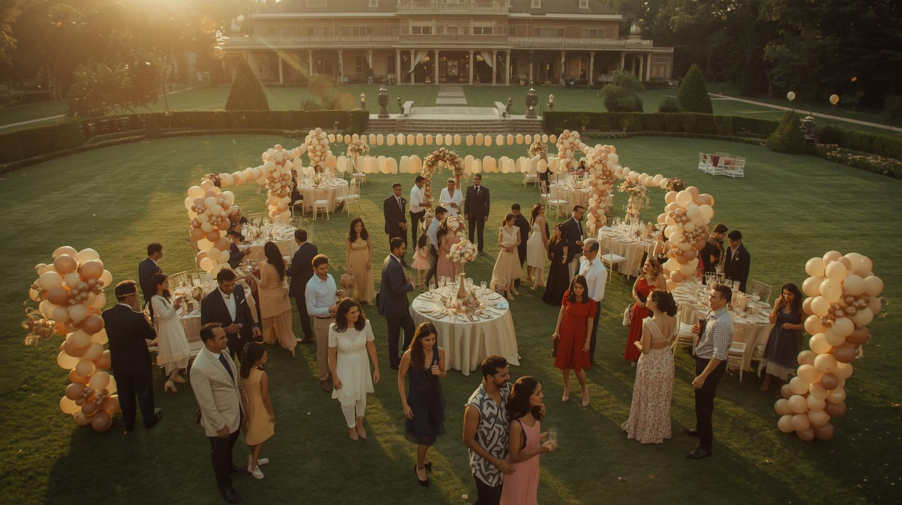
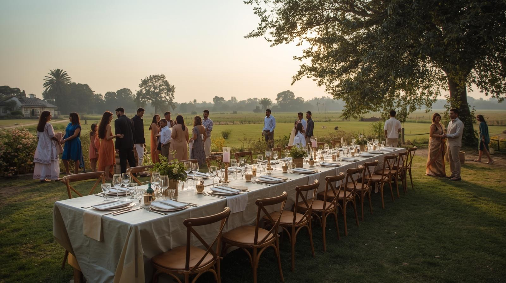
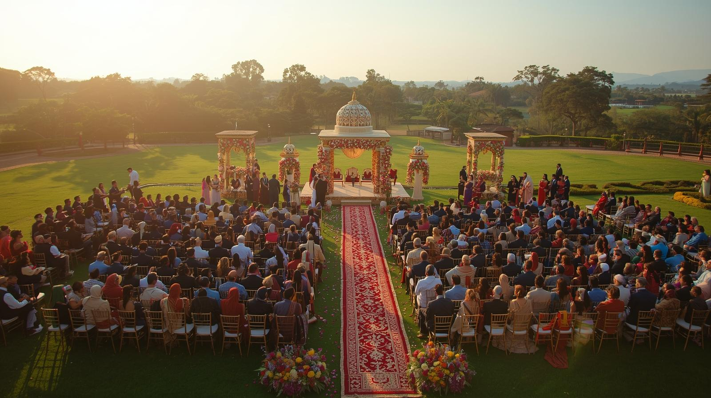
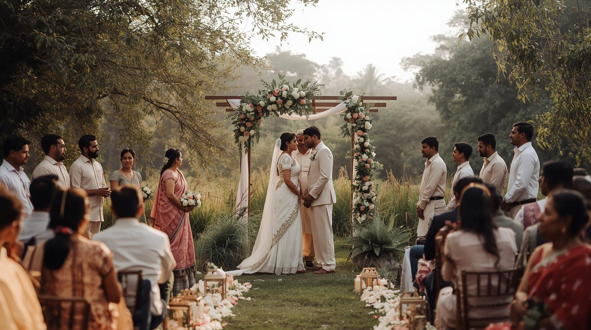
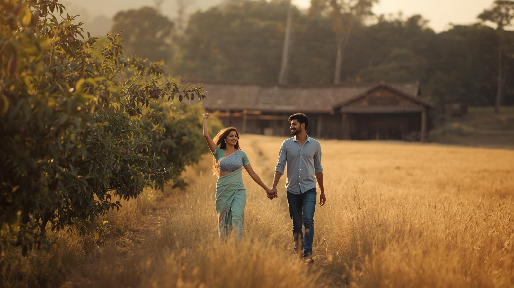
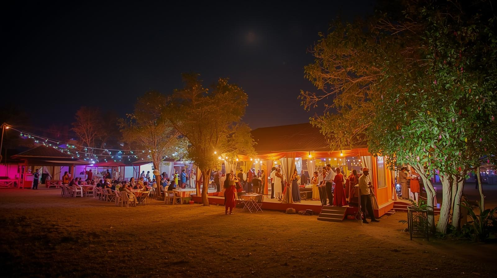
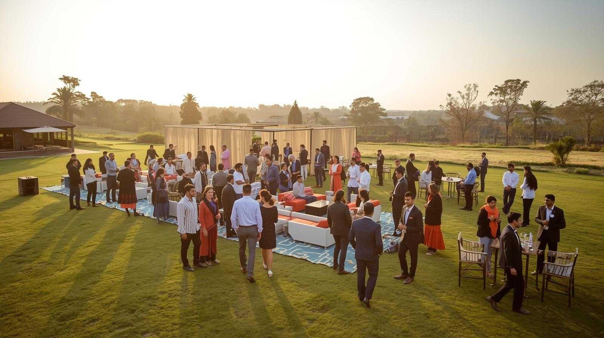
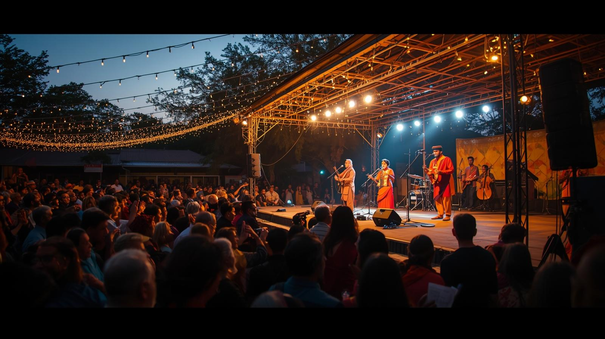

Kingsfarm Social is an expansive countryside destination spread across 8 acres of open land, thoughtfully curated for celebrations of every scale. Designed to host everything from intimate gatherings to large-format events, the venue offers a rare balance of space, privacy, and natural surroundings.
With open landscapes, fresh air, and flexible layouts, Kingsfarm Social provides a calm yet versatile alternative to conventional city venues.
Layouts curated based on event size, guest flow, and ambience.


Memorable countryside celebrations for kids and adults.

Anniversaries, family gatherings, and milestone moments.

Spacious outdoor settings designed for grand wedding celebrations.

Elegant ceremonies in a calm, natural countryside environment.

Scenic backdrops with orchards, open fields, and ranch spaces.

Aesthetic outdoor locations for reels, campaigns, and launches.

Team outings, retreats, and open-air corporate gatherings.

Private concerts, folk performances, and curated cultural evenings.
Kingsfarm Social is conveniently located on the outskirts of Bengaluru, offering a peaceful countryside setting without feeling far from the city. The venue is well-connected by road, making it easy for guests to arrive comfortably for both day and evening events.
Every event at Kingsfarm Social comes with thoughtfully planned essentials to ensure a smooth and comfortable experience for hosts and guests alike.
Complete access to the property during your event duration, ensuring privacy and uninterrupted celebrations.
Multiple open areas suitable for ceremonies, dining, performances, and guest movement.
Essential electrical connections to support lighting, sound, and event setups.
Adequate parking space for guest vehicles and event-related logistics.
Venue-level assistance to ensure smooth access, timelines, and basic coordination during the event.
Open-format spaces that can be adapted based on guest count, flow, and event requirements.
Additional services such as décor, catering, horse interaction, and technical setups can be arranged as add-ons.
Every event at Kingsfarm Social is planned uniquely. Share your requirements and we’ll curate a personalised quote.
A glimpse into our training, horses, and everyday moments at the academy.
Tell us about your event we’ll handle the rest.
Kingsfarm is set amidst open countryside, offering a calm and private riding environment away from city congestion.
151 – 155, Kodiyalam RoadKingsfarm Social presents Bengaluru's most distinctive countryside event venue, spanning 8 acres of pristine landscapes perfect for weddings, corporate gatherings, and private celebrations. Our premium outdoor venue attracts event planners and families from Whitefield's residential communities, Electronic City's corporate networks, and Koramangala's social circles, offering an enchanting alternative to conventional city banquet halls. Set amidst working horse ranches and mango orchards near Sarjapur Road, our versatile celebration destination accommodates intimate gatherings of 30 guests to grand celebrations hosting 5,000 attendees. With flexible open lawns, semi-covered areas, and exclusive private bookings, Bengaluru event hosts discover the perfect blend of natural beauty, spacious layouts, and countryside tranquility for creating unforgettable milestone moments and corporate experiences.
Host your most significant celebrations at Kingsfarm Social, Bengaluru's premier 8-acre countryside destination designed for events that demand privacy, space, and a touch of rustic luxury. Nestled near Sarjapur Road, our expansive venue provides a breathtaking alternative to conventional city halls, offering working horse ranches, mango orchards, and pristine open lawns. Whether you are planning a grand wedding for 5,000 guests or an intimate corporate retreat, our secure and private estate ensures your event remains exclusive and memorable.
At Kingsfarm Social, we understand that every event is unique. Our versatile layouts accommodate a wide spectrum of gatherings—from high-profile influencer shoots and brand launches to traditional cultural performances and large-scale music festivals. The combination of natural beauty and functional infrastructure makes us the preferred choice for pre-wedding photography and professional cinematography. With ample parking, modern amenities, and dedicated support staff, we handle the logistics so you can focus on the celebration.
As Bengaluru's premier countryside celebration venue, Kingsfarm Social delivers exceptional event experiences for discerning hosts. Our facility welcomes wedding planners, corporate managers, and celebration organizers from across the metropolitan region, including Whitefield and Electronic City. By combining the tranquility of a countryside ranch with the accessibility of a suburban location, we provide a seamless experience for both local families and international corporate guests, creating magical moments that linger long after the event concludes.